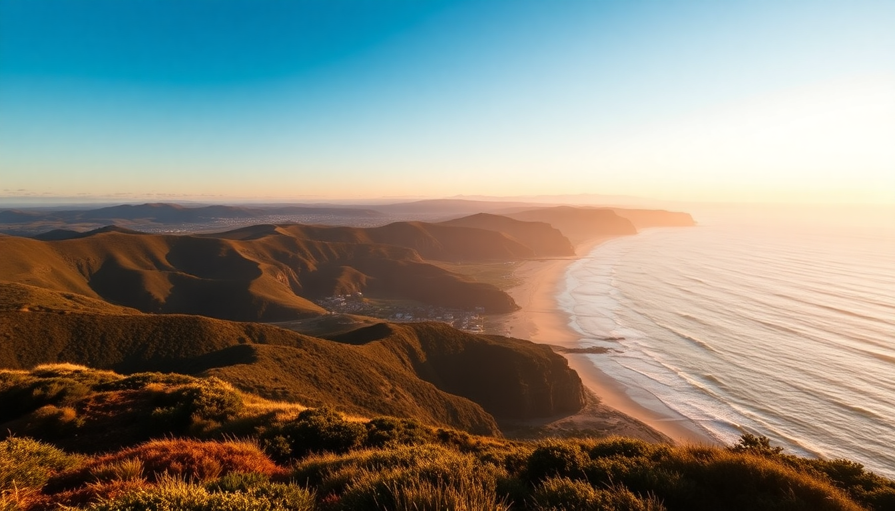

Best Day Trips from Melbourne: Great Ocean Road, Yarra Valley & Phillip Island

I spent a week based out of a small apartment in Fitzroy, and every morning I faced the same question: which direction to drive? Melbourne is a rare city where three completely different day trips—coastal cliffs, wine valleys, and wildlife islands—are all within a two-hour radius. After doing all three, here’s what actually delivered, what felt like a theme park, and how to avoid the rookie mistakes.
Is the Great Ocean Road worth the full day?
Yes, but only if you commit to the full drive and leave by 7 AM. The road itself is 243 kilometers of winding coastal asphalt between Torquay and Warrnambool. Most tour buses stop only at the Twelve Apostles and turn around, which means you miss the quieter western half near the Bay of Islands. I drove it myself in a rental Hyundai, and the difference between the bus crowds and the empty lookouts two hours further west was night and day.
- Torquay – Start here for a coffee at Brim CC before the crowds hit. The surf beach is fine but not the main event.
- Lorne – Stop for a walk along the Lorne Beach boardwalk and grab a pie at the Lorne Bakery. Skip the overpriced seafood places on the main strip.
- Twelve Apostles – Arrive before 10 AM or after 4 PM to avoid the bus hordes. The viewing platforms are well-built but the site feels like a shopping mall at midday.
- Loch Ard Gorge – Better than the Apostles in my opinion. Fewer people, more dramatic rock formations, and you can walk down to the beach.
- Bay of Islands – 20 minutes west of Port Campbell. Almost no tourists, and the limestone stacks are just as impressive. This is where you feel like you’ve found something the tours miss.
I stayed overnight in Port Campbell at the Port Campbell Motor Inn — basic, clean, and a three-minute walk to the pub. If you’re doing it as a day trip from Melbourne, plan for 12 hours minimum. The drive back in the dark is winding and stressful; I’d recommend a guided tour with a driver so you can nap.
What’s the best way to tour the Yarra Valley wineries?
The Yarra Valley is a 50-minute drive east of Melbourne, but it’s not a place to DIY without a plan. There are over 80 wineries here, and they’re spread out on winding back roads. Drinking and driving is a real risk, so either hire a driver, join a small-group tour, or use a service like Yarra Valley Wine Lovers Tours that handles the logistics. I did a self-guided day with a designated driver (my partner stayed sober), and we still only managed four cellar doors before we were tired and hungry.
- Domaine Chandon – The most commercial stop, but the tasting room is spacious and the sparkling wine is consistent. Book ahead for a seated tasting; walk-ins get crowded by 11 AM.
- Yering Station – A historic property with a good restaurant and a large art gallery. The Yarra Valley Dairy next door sells fresh mozzarella and goat cheese that pairs well with the wine.
- De Bortoli – My favorite stop. The cellar door staff are knowledgeable without being snobby, and the Noble One botrytis semillon is worth buying a bottle to take home. They also have a casual pizzeria out back.
- Soumah – A smaller, less visited winery with a stunning view over the valley. They specialize in Italian varietals like nebbiolo and sangiovese. The tasting fee is reasonable, and they waive it with a purchase.
Lunch at Eleven Mile Drive in Dixons Creek is a solid choice — wood-fired pizza and local produce in a relaxed setting. Avoid the fancy degustation lunches unless you have three hours to kill and a deep wallet. For accommodation, The Sebel Melbourne Yarra Valley in Chirnside Park is a modern hotel with good access to both the wineries and the highway back to Melbourne.
Should you visit Phillip Island for the penguins or the whole island?
The penguin parade at sunset is the headline act, but the rest of Phillip Island is worth a full day if you plan it right. I made the mistake of only booking the penguin tickets and arrived two hours early, which gave me time to explore the island’s other attractions. The penguins themselves are genuinely impressive — hundreds of little blue penguins waddling up the beach at dusk — but the boardwalk experience is highly commercialized. You sit in bleachers with hundreds of other people, and photography is banned (they enforce it strictly to protect the penguins’ eyes).
- Phillip Island Nature Parks – This is the official penguin viewing site. Book the Penguin Plus ticket for the smaller, elevated boardwalk instead of the general admission bleachers. You’ll be closer to the penguins and further from the crowd noise.
- Koala Conservation Reserve – A short walk through eucalyptus trees where koalas sit in low branches. It’s a managed habitat, not a zoo, and you can see them without binoculars. Takes about 45 minutes.
- Nobbies Centre – A rocky headland at the western tip of the island with a boardwalk over the seal colony. The fur seals are visible from the viewing platform, and the walk is free after you park at the center.
- Churchill Island – A small historic farm connected by a bridge. Skip it unless you have kids or a strong interest in 19th-century agricultural buildings.
I stayed overnight at the Tropicana Motor Inn in Cowes — nothing fancy, but clean and a five-minute walk to the main street restaurants. The Phillip Island Ferry from Stony Point is a faster option than driving via the bridge, but it only runs on weekends and public holidays. For dinner, The Cape Kitchen in Newhaven serves decent modern Australian food with a view over Western Port Bay. The fish and chips at Pino’s in Cowes are a reliable backup if you’re on a budget.
When is the best time to visit each destination?
Timing matters a lot for these three trips, and the ideal season isn’t the same for all of them. Summer (December to February) brings heat and crowds to all three, but winter (June to August) has its own trade-offs.
- Great Ocean Road – Best in late spring (November) or early autumn (March). The weather is mild, the road is less crowded than summer, and the sun sets early enough to avoid driving back in total darkness. Summer weekends are a nightmare with caravan traffic and full parking lots at every lookout.
- Yarra Valley – Harvest season (February to April) is the most interesting for wine lovers, with many wineries hosting events and crushing grapes. The valley is beautiful in autumn when the vines turn red and gold. Winter tastings are quieter and more intimate, but the outdoor views are gray and drizzly.
- Phillip Island – The penguin parade happens year-round, but the timing changes with sunset. In summer, the penguins come ashore around 8:30 PM, meaning you’ll be driving back to Melbourne after 10 PM. Winter sunsets are earlier (around 5 PM), so the penguins arrive before dark and you can get back to the city by 8 PM. Winter is also less crowded, but it’s cold and windy on the boardwalk — bring a jacket and a beanie.
How do you choose between a guided tour and self-driving?
I did a mix of both, and each has a clear use case. Self-driving gives you freedom to stop where you want and avoid the bus crowds, but it adds stress from navigation, parking, and fatigue. Guided tours let you relax and drink (important in the Yarra Valley) but you’re stuck on someone else’s schedule.
- Self-drive for the Great Ocean Road – I’d do this again. The stops are spread out, and having a car lets you skip the Twelve Apostles crowds and push west to the Bay of Islands. Just start early and don’t try to do it in one day if you’re not comfortable with two hours of night driving on winding roads.
- Guided tour for Yarra Valley – Absolutely. A small-group tour with a driver is the only safe way to visit multiple wineries. I used Yarra Valley Wine Lovers Tours and they handled the bookings, drove us between cellar doors, and included lunch at a winery. The group was eight people, not a bus of forty.
- Either for Phillip Island – The drive from Melbourne is easy (90 minutes on the M1 and then local roads), and parking at the penguin center is ample. But a guided tour that includes the Koala Conservation Reserve and Nobbies can save you from navigating the island’s one-way roads. I self-drove and it was fine.
FAQ
Can you do all three day trips from Melbourne in one week? Yes, easily. I did them on three separate days with rest days in between. The Great Ocean Road needs a full day (or overnight), the Yarra Valley is a half-day if you limit to three wineries, and Phillip Island is a full afternoon and evening. Don’t try to combine any of them into a single day — the driving distances are manageable, but the experiences deserve separate focus.
Is the Great Ocean Road worth it if you’re not a confident driver? No. The road has tight curves, frequent tourist buses, and sections with no guardrails above steep cliffs. If you’re not comfortable with that, book a small-group tour. The drivers know the road and you can enjoy the views without white-knuckling the steering wheel.
What should you bring to Phillip Island for the penguin parade? A warm jacket, a blanket for your lap, and binoculars if you’re in the general admission bleachers. The wind off Bass Strait is brutal even in summer. No cameras or phones — they’re banned and staff will ask you to put them away. Wear closed-toe shoes because the boardwalk can be slippery.
Conclusion
- Great Ocean Road is best as a self-drive overnight trip, starting early and pushing west of the Twelve Apostles to the Bay of Islands for fewer crowds.
- Yarra Valley requires a designated driver or a small-group tour — Domaine Chandon, De Bortoli, and Soumah are the three stops that give you variety without overwhelm.
- Phillip Island is worth the drive for the penguin parade alone, but add the Koala Conservation Reserve and Nobbies to fill the afternoon. Book the Penguin Plus ticket for a better view.
- Timing matters: spring and autumn for the Great Ocean Road, harvest season for the Yarra Valley, and winter for Phillip Island to avoid late returns.
- Don’t combine any two of these in one day. Each is a full trip on its own, and rushing them defeats the point of leaving Melbourne in the first place.